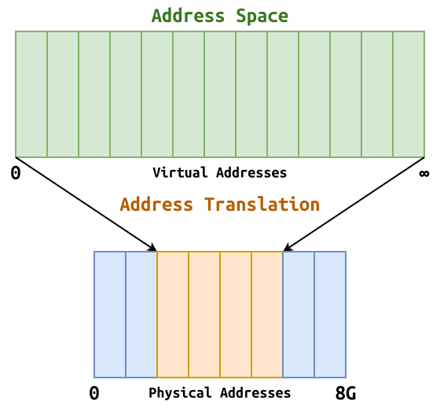
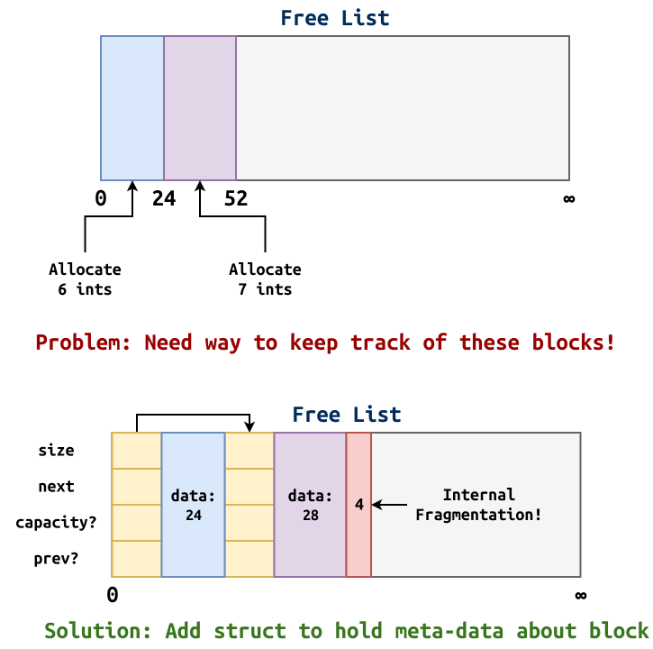
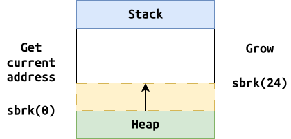

Review: Virtual Memory¶
-
Virtual Memory: Abstract RAM

Address Space: Illusion that memory is a large (possibly infinite) contiguous array of blocks where you have sole possession.
Address Translation: Implements the illusion by converting virtual addresses to physical addresses.
-
Base and Bounds:
baseserves as an offset into physical memory andboundsserves as upper limit.MMU: Memory management unit enforces this boundary.
As it performs translation, the MMU will see the boundary violation and triggers a fault, which then causes the CPU to consult the trap table, which then causes the OS to be invoked, who will then send a signal to the offending process.
Preview: We will introduce segmentation and paging in the next two lectures.
OS Kernel: Acts as a manager.
-
Handles
fault as described above. -
Keep track of Base and Bounds and updates MMU on each context switch.
-
Keep track of free memory.
Free List: Overview¶
To track all of the block allocations, we can use a free list, which is a linked list of all the space reservations (can contain both active and free blocks or just the free blocks).

-
Operating system must track system memory allocations.
-
Individual processes must also keep track of heap allocations.
-
Must be wary of fragmentation.
Heap Allocation: malloc0.c¶
Is malloc a
system call ?No, because we are implementing it (without modifying the kernel). However, to implement it, we do need a system call... so we will be using sbrk (most modern allocators use mmap).
Read sbrk manual description and determine how we can use it.

/* Allocate space */ void *malloc(size_t size) { void *block = sbrk(size); if (block == (void *)-1) { /* OS allocation failed */ return NULL; } return block; } /* Reclaim space */ void free(void *ptr) { }What did we compile? Why? shared library.
# List what libraries a program uses $ ldd /usr/bin/cat # Trace what libraries a program uses $ strace /usr/bin/cat # Trick: Inject our library first using LD_PRELOAD $ env LD_PRELOAD=./libmalloc0.so cat MakefileHow can we verify that it is using our malloc?
add prints void *malloc(size_t size) { puts("hi"); // Causes segfault... due to recursion??? write(1, "hi\n", 3); // Can use write though! ... }Linus Story: Fixed problem in playing audio by injecting his own version of
memcpy.- Simple, but fast and works!
-
Doesn't actually keep track of anything
-
Doesn't release memory
-
Doesn't keep blocks aligned
Heap Allocation: malloc1.c¶
Rather than always calling sbrk to allocate more space, try to re-use previous allocations from free list.
- Explain
struct Block(attributes, alignment, size). - Implement
malloc(begin). - Implement
free_list_search(discuss fit algorithms). - Implement
malloc(continue). - Implement
block_allocate. - Implement
block_detach. - Complete
malloc. - Implement
free. - Implement
free_list_insert.
/* Block Constants */ #define ALIGNMENT (sizeof(double)) #define ALIGN(size) (((size) + (ALIGNMENT - 1)) & ~(ALIGNMENT - 1)) #define SBRK_FAILURE ((void *)(-1)) /* Block Macros */ #define BLOCK_FROM_POINTER(ptr) \ (Block *)((intptr_t)(ptr) - sizeof(Block)) /* Block Structure * * [ ] * [ ] <- Block - Data (contents) * [ ] <- Block - Header (struct) * **/ typedef struct block Block; struct block { size_t capacity; /* Number of bytes allocated to block */ size_t size; /* Number of bytes used by block */ Block * prev; /* Pointer to previous block structure */ Block * next; /* Pointer to next block structure */ char data[]; /* Label for user accessible block data */ }; /* sizeof(Block) = 8 + 8 + 8 + 8 = 32 bytes */ Block * block_allocate(size_t size) { intptr_t allocated = sizeof(Block) + ALIGN(size); Block * block = sbrk(allocated); if (block == SBRK_FAILURE) { return NULL; } block->capacity = ALIGN(size); block->size = size; block->prev = block; block->next = block; return block; } Block * block_detach(Block *block) { /* Update prev and next blocks to reference each other * * [ before ]<->[ block ]<->[ after ] * * [ before ]<->[ after ] * **/ if (block) { Block *before = block->prev; Block *after = block->next; before->next = after; after->prev = before; block->next = block; block->prev = block; } return block; } /* Free List Global Variable */ Block FreeList = {0, 0, &FreeList, &FreeList}; /* Free List Functions */ Block * free_list_search(size_t size) { /* Perform first fit algorithm: find first block largest to satisfy request */ for (Block *curr = FreeList.next; curr != &FreeList; curr = curr->next) { if (curr->capacity >= size) { return curr; } } /* Best fit algorithm: find smallest block to satisfy request in order to minimize internal fragmentation */ /* Worst fit algorithm: find largest block to satisfy request in order to minimize external fragmentation */ return NULL; } void free_list_insert(Block *block) { /* Append to tail * * [ tail ]<->[ FreeList ] * * [ tail ]<->[ block ]<->[ FreeList ] * **/ Block *tail = FreeList.prev; tail->next = block; FreeList.prev = block; block->next = &FreeList; block->prev = tail; } /* POSIX API Functions */ /** * Allocate specified amount memory. * @param size Amount of bytes to allocate. * @return Pointer to the requested amount of memory. **/ void *malloc(size_t size) { /* Handle empty size */ if (!size) { return NULL; } /* Search free list for any available block with matching size */ Block *block = free_list_search(size); if (!block) { block = block_allocate(size); } else { block = block_detach(block); } /* Could not find free block or allocate a block, so just return NULL */ if (!block) { return NULL; } /* Return data address associated with block */ return block->data; } /** * Release previously allocated memory. * @param ptr Pointer to previously allocated memory. **/ void free(void *ptr) { if (!ptr) { return; } Block *block = BLOCK_FROM_POINTER(ptr); free_list_insert(block); }